library(tidyverse) # includes ggplot2
penguins <- read_csv("data/penguins.csv")Data Visualisation with ggplot2
Objectives
By the end of this lecture you will be able to:
- build plots from the components of the grammar of graphics — data, aesthetics, geometries — using
ggplot2
- choose a sensible chart type for the question being asked
- explain how visual perception affects the way plots are read, and critique plots for clarity, honesty and accessibility
Setup
Packages and data
ggplot2 is part of the tidyverse. We’ll use the Palmer penguins data from week 4.
Warnings are switched off for this deck. Live, ggplot will print “Removed 2 rows containing missing values” — point it out once: two penguins have no measurements, and ggplot drops them rather than failing.
The grammar of graphics
Components, not chart types
Instead of choosing “a scatter plot” or “a bar chart”, we describe a plot by its parts:
- Data — a tidy tibble
- Aesthetics (
aes) — which variables control position, colour, size, … - Geometries (
geom_*) — what is drawn: points, lines, bars, …
…plus optional stats, scales, coordinates and facets.
The payoff: the same handful of pieces builds every chart, so you learn one system rather than a menu of chart functions. Details of every component are in the notes.
Step 1: data and aesthetics
ImportantTask
Set up a plot of flipper length (x) against body mass (y). What do you see?
ggplot(penguins, aes(x = flipper_length_mm, y = body_mass_g))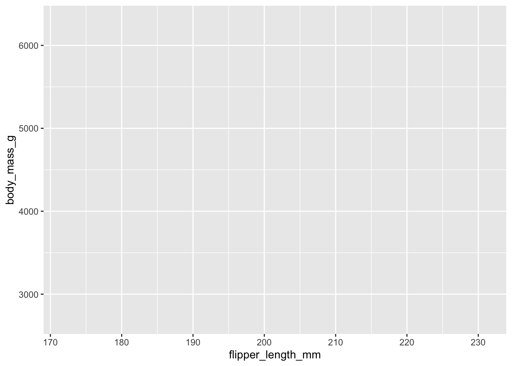
Axes, but no data: we’ve said what to map, not how to draw it.
Step 2: add a geometry
ImportantTask
Draw one point per penguin.
ggplot(penguins, aes(x = flipper_length_mm, y = body_mass_g)) +
geom_point()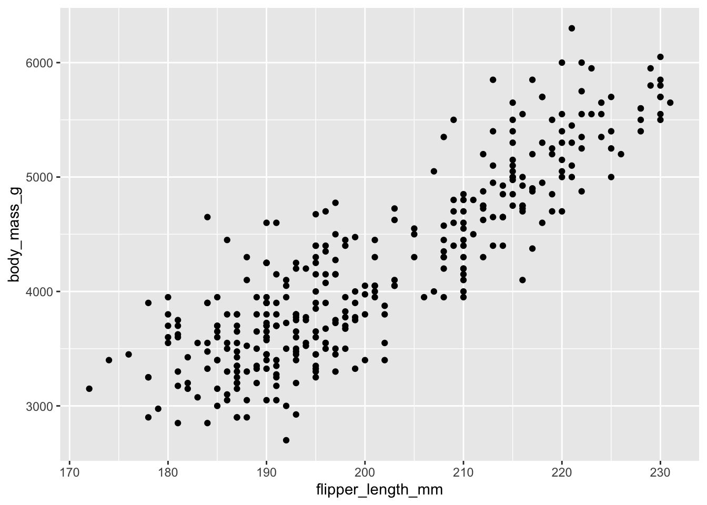
Layers are added with +.
+, not |>
ImportantTask
What’s wrong with this code?
penguins |>
ggplot(aes(x = flipper_length_mm, y = body_mass_g)) |>
geom_point()Error in `geom_point()`:
! `mapping` must be created by `aes()`.
x You've supplied a <ggplot2::ggplot> object.
i Did you use `%>%` or `|>` instead of `+`?penguins |>
ggplot(aes(x = flipper_length_mm, y = body_mass_g)) +
geom_point()Pipe the data in with |>; join layers with +. ggplot2 is older than the pipe — mixing them up is the most common beginner error.
Step 3: more aesthetics
ImportantTask
Colour the points by species.
ggplot(penguins, aes(x = flipper_length_mm, y = body_mass_g,
colour = species)) +
geom_point()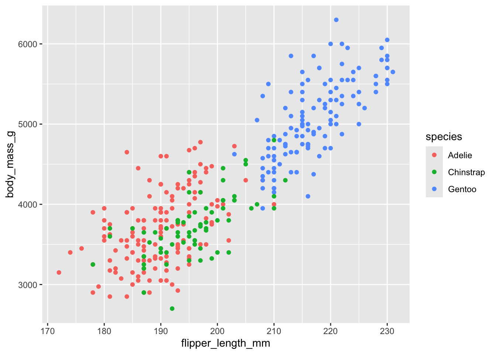
A third variable, mapped to colour. size, shape and alpha (transparency) work the same way.
Step 4: labels and theme
ImportantTask
Give the plot a title, axis labels with units, and a cleaner look.
ggplot(penguins, aes(x = flipper_length_mm, y = body_mass_g,
colour = species)) +
geom_point() +
labs(
title = "Penguin flipper length vs body mass",
x = "Flipper length (mm)",
y = "Body mass (g)",
colour = "Species"
) +
theme_minimal()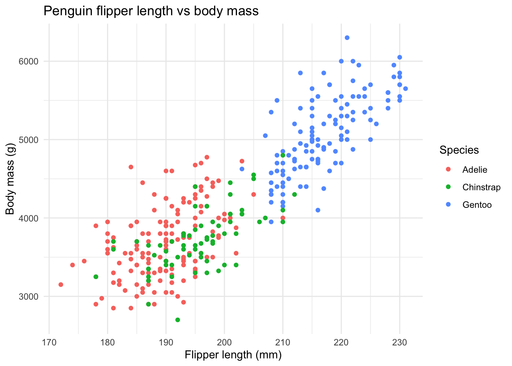
Emphasise units in axis labels — this comes up again in the checklist at the end.
Facets
ImportantTask
Draw a separate panel for each island.
ggplot(penguins, aes(x = flipper_length_mm, y = body_mass_g,
colour = species)) +
geom_point() +
facet_wrap(~island) +
theme_minimal()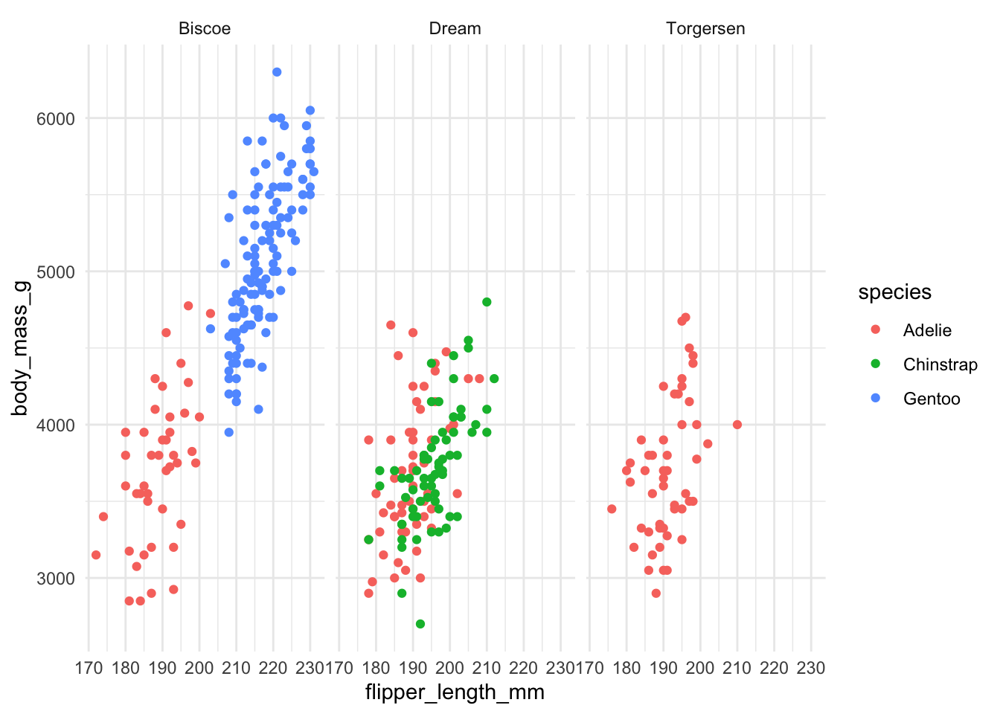
Faceting splits the data into subsets with shared axes — ideal for comparing groups side by side.
Ask what the panels reveal: Gentoo only live on Biscoe; Chinstrap only on Dream; Adelie on all three. That’s a finding the single plot hid.
Layering geometries
ImportantTask
Add a straight-line trend for each species on top of the points.
ggplot(penguins, aes(x = flipper_length_mm, y = body_mass_g,
colour = species)) +
geom_point(alpha = 0.6) +
geom_smooth(method = "lm") +
theme_minimal()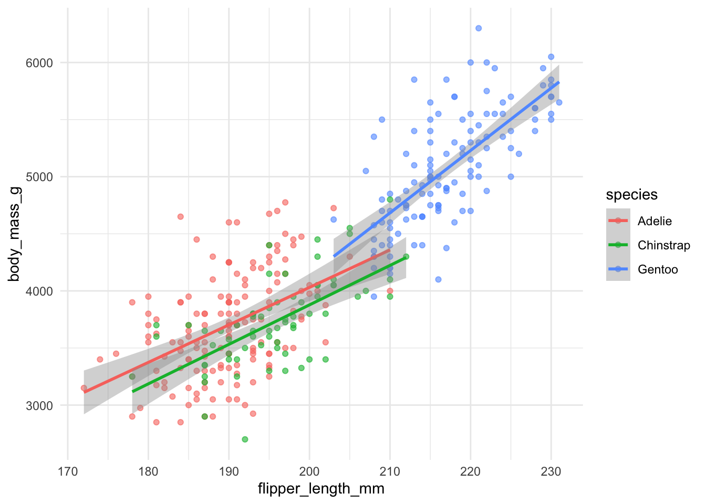
geom_smooth() applies a statistical transformation (here a linear fit) before drawing. alpha = 0.6 lets overlapping points show through.
Aesthetics set in ggplot() are inherited by every layer — that’s why each species gets its own line. The notes show an extra overall dashed trend line, histogram + density, and log-scaled axes.
Choosing a chart
Start from the question
| Question | Chart | Geometry |
|---|---|---|
| Compare a value across categories | Bar chart | geom_bar() / geom_col() |
| How is one variable distributed? | Histogram, boxplot, violin | geom_histogram(), geom_boxplot() |
| How are two variables related? | Scatter plot | geom_point() |
| How does something change over time? | Line chart | geom_line() |
Bar charts: geom_bar vs geom_col
ImportantTask
Plot (a) the number of penguins of each species, and (b) the mean body mass of each species.
ggplot(penguins, aes(x = species)) +
geom_bar()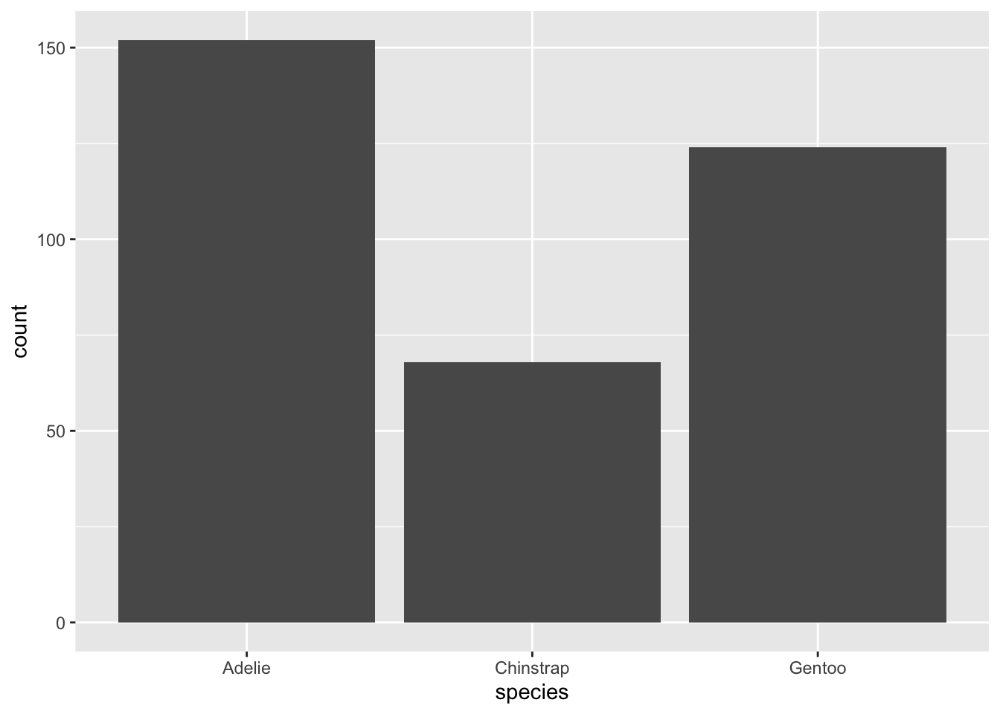
penguins |>
group_by(species) |>
summarise(mean_mass = mean(body_mass_g, na.rm = TRUE)) |>
ggplot(aes(x = species, y = mean_mass)) +
geom_col()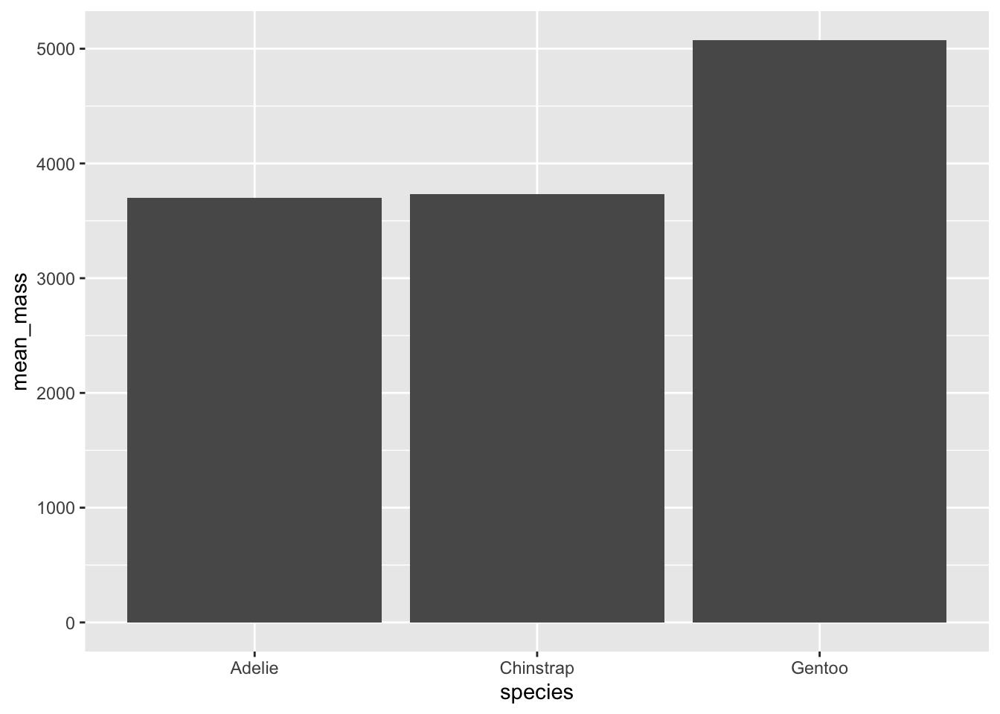
geom_bar() counts rows for you. geom_col() draws heights you have already computed.
geom_bar(): give it only anx. It usesstat = "count", so the bar height is the number of rows in each category. Raw data, one row per penguin.geom_col(): give it anxand ay. It usesstat = "identity", so the bar height is exactly theyvalue. Summarised data, one row per bar.- Common errors to demo:
geom_bar()with ayfails (“must only have an x or y aesthetic”);geom_col()without ayfails (“requires the following missing aesthetics: y”). geom_bar(stat = "identity")is the same asgeom_col(); students will see it in older code online.
Distributions
ImportantTask
Compare the distribution of body mass across species.
ggplot(penguins, aes(x = species, y = body_mass_g, fill = species)) +
geom_violin(alpha = 0.4) +
geom_boxplot(width = 0.15) +
theme_minimal()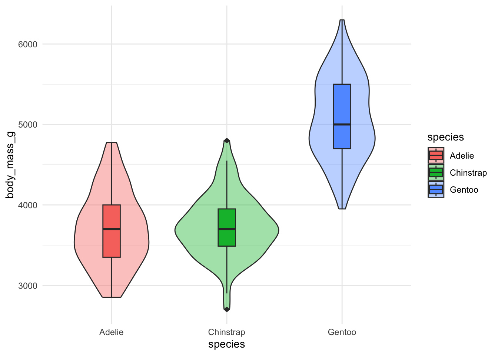
The boxplot gives the median and quartiles; the violin shows the shape the boxplot hides (e.g. two peaks).
Build it in two steps: boxplot alone first, then add the violin underneath. Layer order matters — later layers are drawn on top.
Change over time
ImportantTask
Using gapminder, plot life expectancy over time for the UK, Japan and South Korea.
library(gapminder)
gapminder |>
filter(country %in% c("United Kingdom", "Japan", "Korea, Rep.")) |>
ggplot(aes(x = year, y = lifeExp, colour = country)) +
geom_line(linewidth = 1) +
theme_minimal()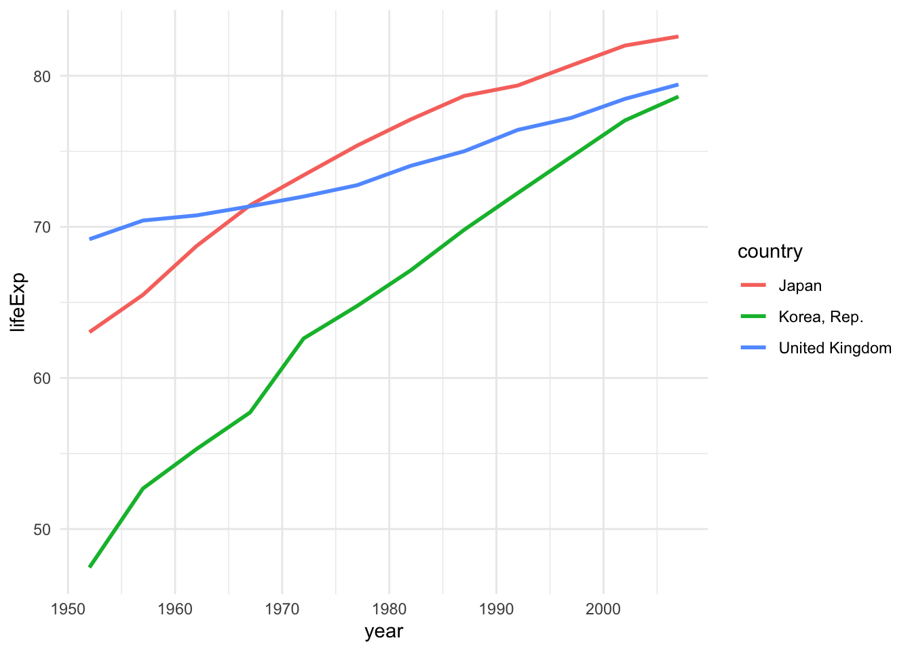
Lines join points in order, so trends and crossovers stand out — Japan overtakes the UK in the late 1960s, and South Korea almost catches up by 2007.
Good moment to connect back: filter() from week 4 feeding straight into ggplot(). South Korea is "Korea, Rep." in gapminder — a reminder to check how values are spelled in the data before filtering on them.
Perception
ggplot2 won’t stop you

The \(y\)-axis starts at 94,000,000 — a small change looks like an explosion.

US military strategy in Afghanistan, 2009. The New York Times headline: “We Have Met the Enemy, and He Is PowerPoint”. Clutter defeats the message.
Which encoding is easiest to read?
ImportantTask
Rank the five groups from largest to smallest.
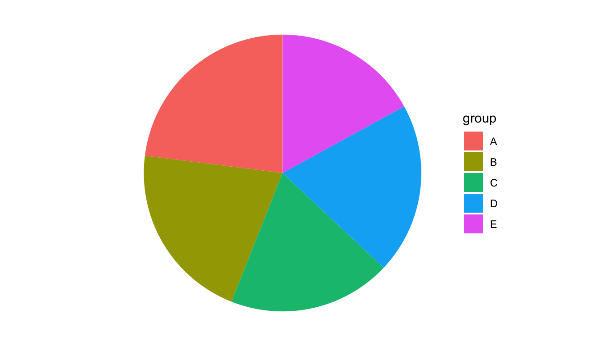
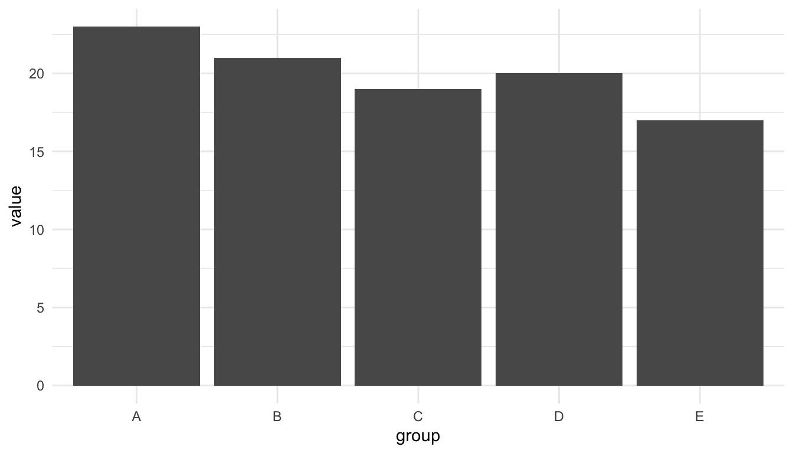
Take a vote on the pie first, then reveal the bar chart. Same data; the pie is literally a stacked bar in polar coordinates (coord_polar) — a nice demonstration of the coordinate component of the grammar.
Cleveland & McGill (1984)
How accurately do people judge…
- position along a common scale — most accurate
- length, then angle and slope
- area, volume, colour saturation — least accurate
Put the comparison that matters most on the most accurate encoding. That’s why bar charts usually beat pie charts.
Colour blindness
ImportantTask
Around 8% of men and 0.5% of women are colour blind, most often red–green. Make this plot readable for them.
ggplot(penguins, aes(x = flipper_length_mm, y = body_mass_g,
colour = species)) +
geom_point(size = 3) +
scale_colour_manual(values = c(Adelie = "red", Chinstrap = "green",
Gentoo = "blue")) +
theme_minimal()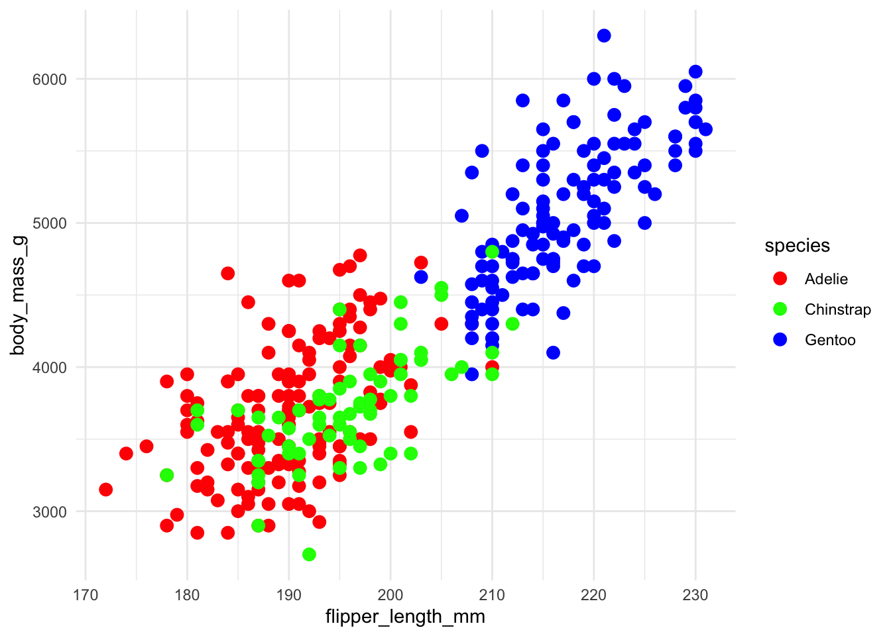
ggplot(penguins, aes(x = flipper_length_mm, y = body_mass_g,
colour = species, shape = species)) +
geom_point(size = 3) +
scale_colour_brewer(type = "qual") +
theme_minimal()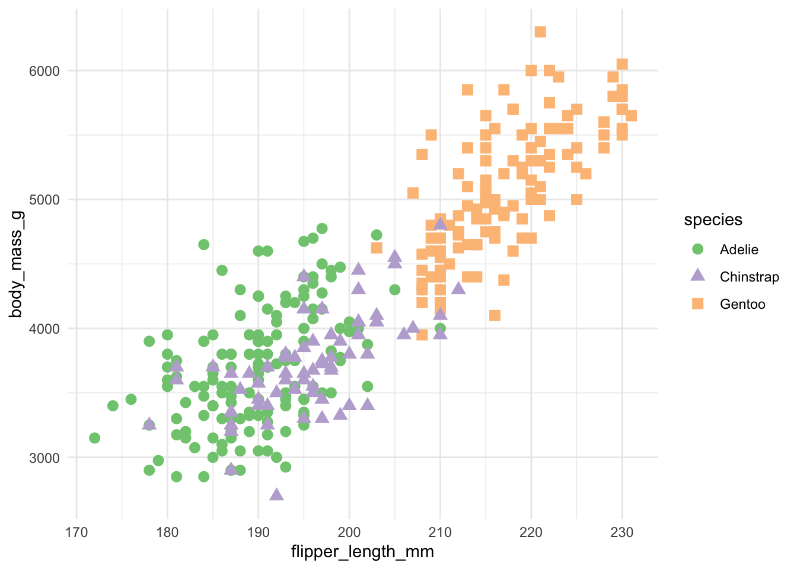
Use a colourblind-safe palette (viridis, ColorBrewer) and a redundant encoding like shape, so the plot survives greyscale printing too.
Without type = "qual", scale_colour_brewer() gives a sequential blue palette — ask the room why that would be wrong for species (it implies an order that doesn’t exist).
A checklist for every plot
- Honest scales — bar charts start at zero
- Accurate encodings — key comparison on position or length
- No clutter — every element earns its place; use
alphafor overplotting
- Clear labels — title, axis names, units
- Accessible — safe palettes plus redundant encodings
If time allows, go back to the welfare chart and have them critique it against the list — it fails 1, and arguably 4.
Wrap-up
Today you can now:
- build a plot layer by layer:
ggplot()+aes()+geom_*()+labs()
- pick a chart for the question — bar, distribution, scatter, line — and know
geom_barfromgeom_col
- critique plots for honesty, perceptual accuracy and accessibility
Read the notes
We didn’t cover in detail:
- the full list of grammar components: stats, scales, coordinate systems
- histograms and density plots; log-scaled axes
facet_grid()and extension packages (patchwork,ggforce,gganimate)
Also useful for coursework: ggsave("plot.png", width = 6, height = 4) saves the last plot.